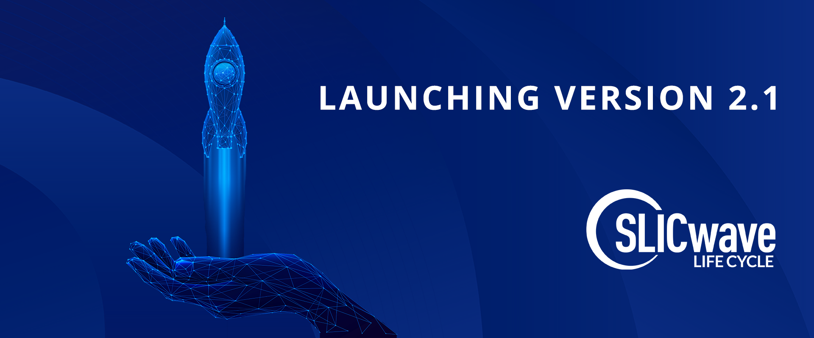

Photoshop Social Media Ads Project
Ah, yes. The two birds, one stone project.
My employer is preparing to launch the next iteration of our main software product and, naturally, some marketing material about it would be helpful. The only social media we utilize is LinkedIn, so these images would likely be useful there. But more importantly, they will be pushed onto our website when the time is right. And hopefully customers will take note and prepare accordingly.
The images used were ones that my employer has purchsed from iStock so we already have the rights to use them and it was a bonus I had nice images to use without digging through Unsplash (even though I love you, Unsplash, I'm on a time crunch).
The top image is not for any particular release and will likely be pushed on to the website just as some ~~variety~~ whereas the bottom two will be pushed into the carousel or somewhere else as a focal point of LOOK NEW THINGS emphasis. Unlike in the Branding Project page, I did not alter the size of the image within the code because it will not change too much and it did not feel necessary to be able to view them all at the same time.
